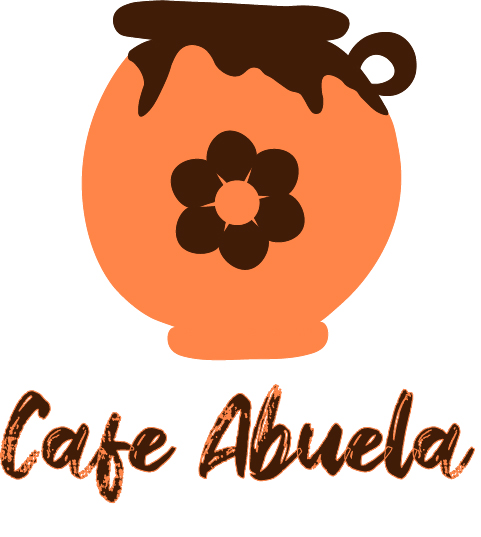

Cafe Abuela's Product Design
Cafe Abuela was in need of a logo, icon, and social media design. Tasked with creating a design which correlates with the brand's personality. The client wanted to have a sense of nostalgia, warmth, and home - just like being with Abuela (Grandma). This being close to home, I was overjoyed with this project.
The goal to keep with the brand's personality and showcase its product was tricky. I wanted to move away from the major coffee chains like Starbucks. And emphasize that Cafe Abuela is your Grandma's home away from home. This led me to Cafe de la Olla, Mexican coffee made in a clay pot - I've never tasted another coffee like it, it's almost like drinking a hug. Looking at the logo, we can intuitively smell and taste coffee with feelings of comfort.
Lastly, came the social media header. In staying with brand personality, logo, and icon designs. It was important to create a header that tied all elements together with Cafe Abuela's tag line, “You'll Never Leave Hungry.”
